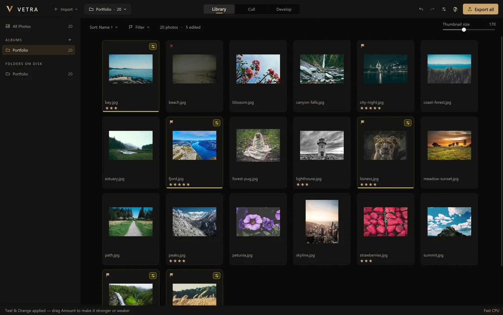
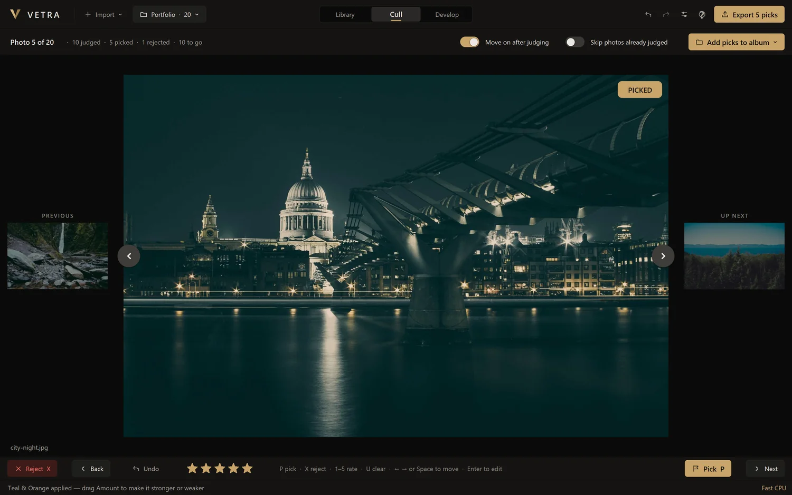
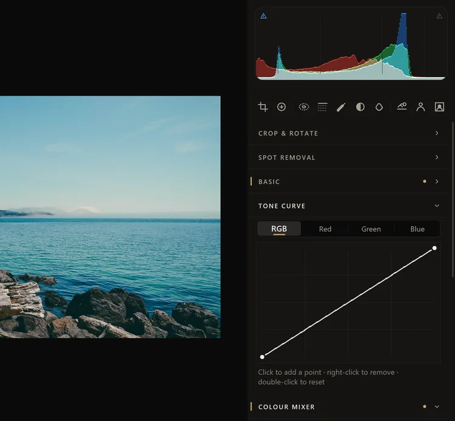
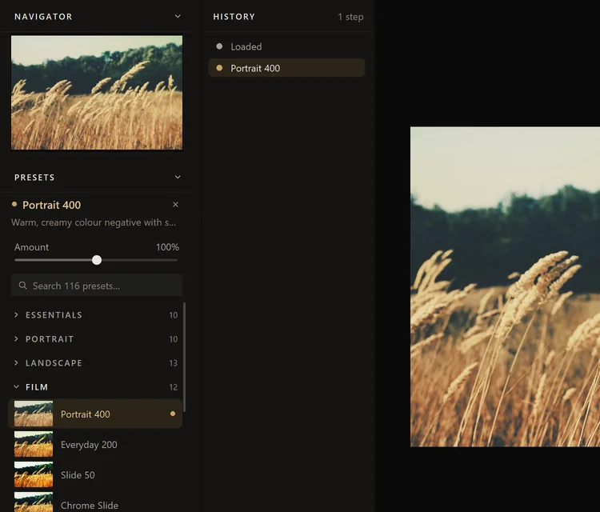
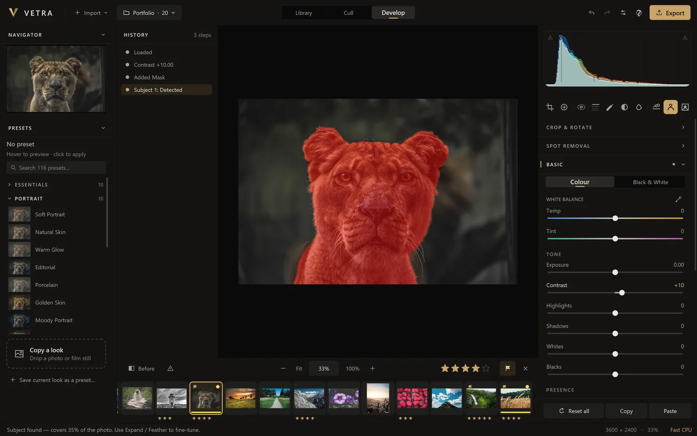
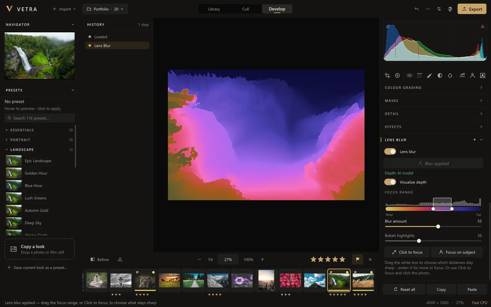
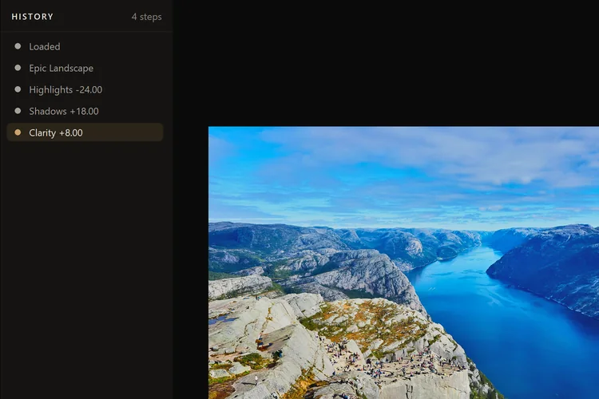
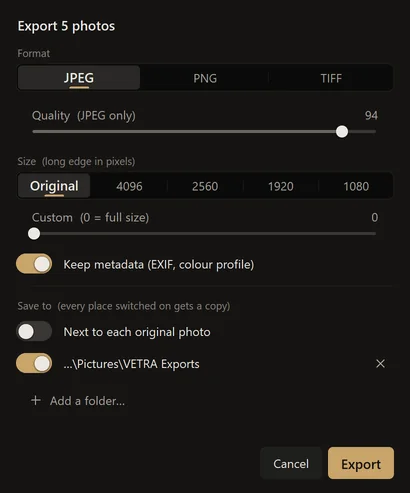

Library
A catalog of your photos, where they already are.
Import a folder or hand-pick photos from anywhere. VETRA remembers them; it does not copy or move them unless you ask it to.
- Albums for any grouping you like. A photo can be in several, and editing it anywhere edits it everywhere
- Folders on disk listed as they are, including subfolders if you choose
- Stars and flags: rate 1 to 5, pick or reject
- Sort by name, date, rating, size or type, and filter to rated, flagged or edited photos
- Copy or move files to another folder from inside VETRA, edits included
- RAW support for 26 formats: CR2, CR3, NEF, ARW, RAF, ORF, RW2, DNG, PEF, SRW, X3F and more

Cull
Choose the keepers without touching the mouse.
Cull shows one photo at a time, as large as the window allows, with the previous and next either side.
- P pick, X reject, U clear, 1–5 rate, and VETRA moves on
- Skip photos already judged to pick up where you stopped
- Undo the last judgement with Ctrl Z
- Add picks to an album in one click, then press Enter to start editing

Develop
A full set of controls, none of them hidden.
Every section can be reset on its own, and a small dot marks the sections you have changed.
Basic
White balance with an eyedropper, exposure, contrast, highlights, shadows, whites and blacks. Texture, clarity, dehaze, vibrance and saturation. Colour or black and white.
Tone curve
A point curve for the whole image and for red, green and blue separately. Click to add a point, right-click to remove one.
Colour mixer and grading
Hue, saturation and luminance for eight colour bands, and colour grading for shadows, midtones and highlights with blend and balance.
Detail
Sharpening with radius, detail and masking. Noise reduction for luminance and colour.
Effects
Vignette with midpoint, roundness and feather. Film grain with amount, size and roughness.
Crop and rotate
Free or fixed aspect ratios, straighten, rotate by 90 degrees, flip horizontally or vertically.
Spot removal
Heal, clone or remove, with size, feather and opacity. Drag the source patch, or ask for a new one.
Histogram
Drag the histogram itself to move tones. Clipping warnings mark blown highlights in red and crushed shadows in blue.
Before and zoom
Peek at the original with \. Fit, 100% and wheel zoom toward the pointer, with a navigator for where you are.

Sliders that behave.
- Double-click a slider to reset it
- Click the number to type an exact value
- Hover and press ← → to nudge, with Shift for ten times as far
- Copy and paste a look between photos with Ctrl C and Ctrl V, or copy only the groups you choose
Presets and Copy a look
116 looks, and any look you can find.
Presets live under the navigator. Each row shows the photo you are editing with that preset applied.
- 12 categories: Essentials, Portrait, Landscape, Film, Cinematic, Moody, Bright & Airy, Vintage, Black & White, Urban & Night, Seasons & Nature, Food & Product
- Hover to preview, click to apply
- Amount from 0% to 200%. Anything you change by hand afterwards is kept when Amount moves
- Search, favourites and your own saved presets at the top
- Copy a look: drop in any picture, or paste a screenshot with Ctrl V. VETRA reads its colour and mood and sets its own sliders to match, checking the result against the picture until it is as close as the sliders allow
A preset changes only the look. Crop, rotation, spot removal and masks stay as they were.

Masks
Eight ways to select part of a photo.
- Subject: finds what the photo is about. Click parts of it to be exact
- Sky and Background: found the same way. Background is the exact negative of a Subject mask
- Radial and Linear: shapes with a feathered edge
- Brush: paint it on, with size and hardness, and an erase mode
- Luminance and Colour: select by brightness, or by a colour you click
Every mask has its own local adjustments, an amount, and a range limit by luminance or colour. Masks can add to or subtract from each other, be inverted, renamed and switched off. Press O to show or hide the overlay.
Subject, Sky and Lens blur use AI models that run on your computer. VETRA asks before downloading them, 320 MB in all.

Lens blur
A wide-aperture look, after the fact.
Blur the background works out how far away everything in the photo is, focuses on the subject and blurs the rest.
- Focus range: drag the box to choose which distances stay sharp, or widen it for more in focus
- Click to focus on any point in the photo, or Focus on subject
- Visualize depth shows the depth map in colour, near to far
- Blur amount and bokeh highlights

History
Every change, in order, always open.
History has its own column beside the photo. It is the full story of an edit, not just an undo stack.
- Click a step to go back to it
- Similar steps bundle together so the list stays readable
- Select several with Ctrl or Shift and delete them
- Rename a step with a double-click

Export
Finished files, wherever you need them.
- JPEG, PNG or TIFF, with a quality setting for JPEG
- Size: original, or a long edge of 4096, 2560, 1920, 1080 or any number. Photos are never enlarged
- Metadata: keep or leave out EXIF and the colour profile
- Save to several places in one export, including next to each original. A folder that is not connected is skipped with a message
- Never overwrites: a second export of the same photo gets its own name
- In the background, with progress and time remaining, while you keep working

Safety
Built so that nothing is lost.
Non-destructive
Original files are opened and never written. Edits are a small text file next to each photo that travels with it.
Backups of your edits
Choose one or more folders and VETRA keeps a copy of every edit, the catalog and your presets there, updated as you work.
Restore, and undo the restore
"Restore edits" brings everything back after a reinstall or on a new computer. Undo can take a restore back.
See it on your own photos.
The test version is free and takes about a minute to install.